燃油避險
能源相關連結:
1. IEA國際能源署
2. EIA美國能源資訊管理局
3. OPEC石油輸出國組織
4. BP英國石油公司Energy Outlook
5. Forbes Energy News
What is risk?
The definition of Risk：*
☂ Usually used or referred to a negative term.
☂ The uncertain events cause the adverse effects.
☂ It doesn’t equal to “ Uncertainty ”.
The simple statement to tell apart them is：
� Uncertainty can be called as imperfect knowledge.
� Therefore, Risk can be deemed as uncertain consequences.
Secretary of Defense (1975~1977, 2001~2006) Donald Rumsfeld ：
1. known knows： there are things we know we know.
2. known unknowns： there are some things we do not know.
3. unknown unknowns： the ones we don’t know we don’t know.
Albert Einstein：
“Not everything that counts can be counted, and not everything that can be counted counts.”
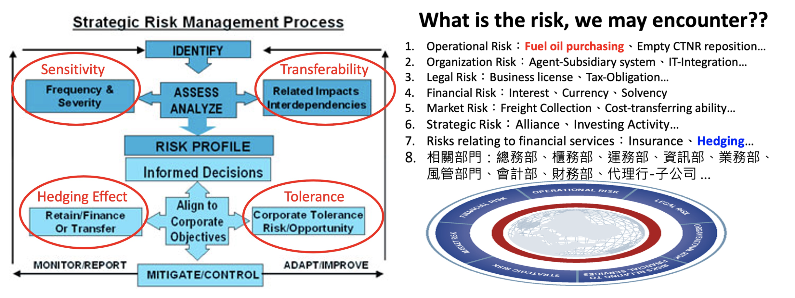
Five Prices may interest us…
1. Past Price:
Historic price, May worth nothing than making sense of the present and the future.
2. Present Price:
Spot price, Influencing the physical purchasing cost.
3. Futures Price of the Present:
Futures Price, impacting on the performance of hedging position.
4. Present Price of the Futures:
Spot Price of the futures comingt to settle, the future real physical purchasing cost and the real gain/loss of the hedging position.
5. Future Price of the Futures:
Who cares?? God may …
Does the Spot Price or Futures Price define the market ??
1. How to define the bullish or bearish market??
Price trend、Demand-Supply-Stock 、Future price cure . . .
Maybe all they can define it, but which weighs the most is a good question…
2. Participants in Oil market：
Producers、Purchasers、Investors、Speculators 、Hedgers. . .
3. If say, Real Supply-Demand rule is the one who decides the spot price.
But how hedging funds can sway spot price, even without the ability to manipulate the oil market??
Via Futures Curve!! An mere 320 Billion invested by institutions leverage the annual 1.8 Trillion in Oil market.
4. In theory, futures price is higher than spot price due to：
Interest factor(or inflation expectation)、storage cost、delivery cost . . .
5. Can the spread(or Contango) fully reflect all these expense?? “Absolutely No.”
an important ingredient：People’s view, formed upon the continuously-developing scenarios, which have been happened or yet-to-be happening.
6. While views coincide gradually, price go correspondingly.
7. But In extreme cases, “overreaction” is always accompanied with reverse results.
遠期價格曲線v.s.牛熊市況判斷
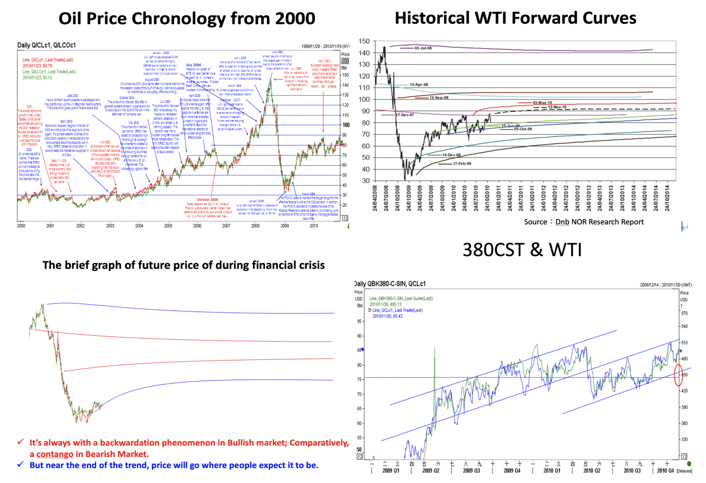
短期進場看技術面，長期持有看基本面！！
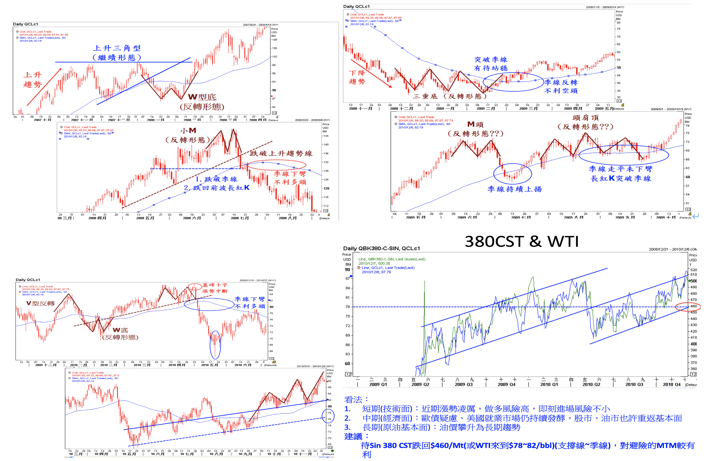
CFTC 商業及避險部位淨多空部位指標觀察
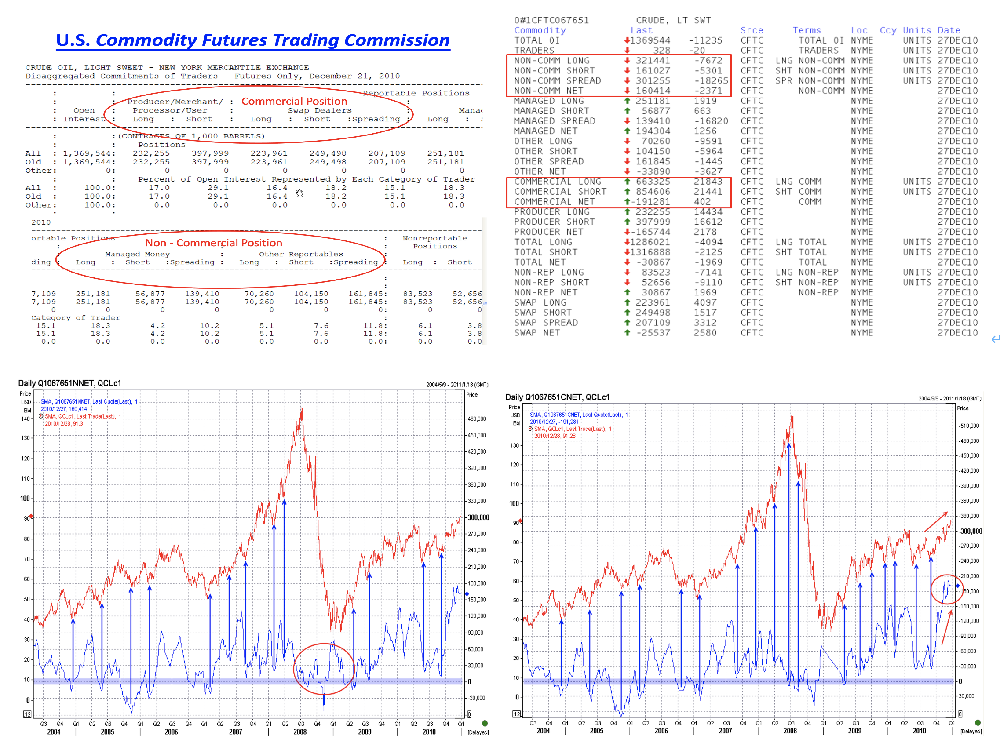
原油裂解產品
參考資料: 原油裂解原理 、 汽油、煤油、柴油的差異
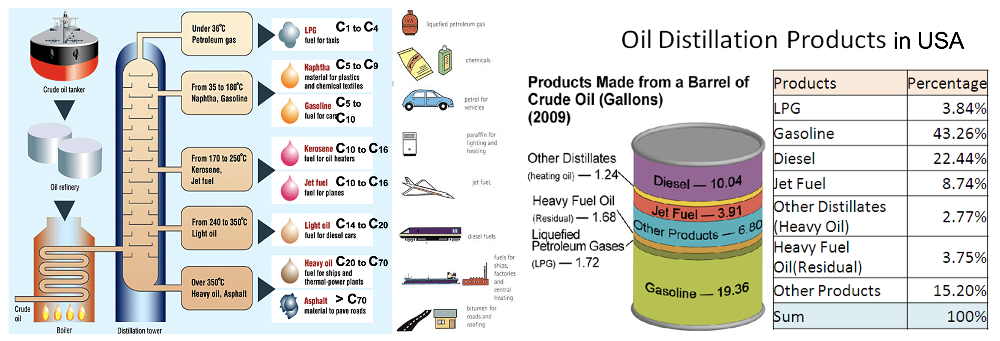
裂解產品體積換算
能源產品換算器:
CME Conversion Calculator
、
CME Crack Spreads
、
Qatar Energy Conversion Factor
、
BP Conversion Factor
✓ Naphtha: 1 metric ton ≈ 8.90 barrels
✓ Gasoline: 1 metric ton ≈ 8.50 barrels
✓ Diesel Oil: 1 metric ton ≈ 7.45 barrels
✓ Bunker Oil: 1 metric ton ≈ 6.35~6.8 barrels
塑膠產品:
✓
五大泛用塑膠
✓
認識塑膠產品上的編號
能源相關ETF投資產品：
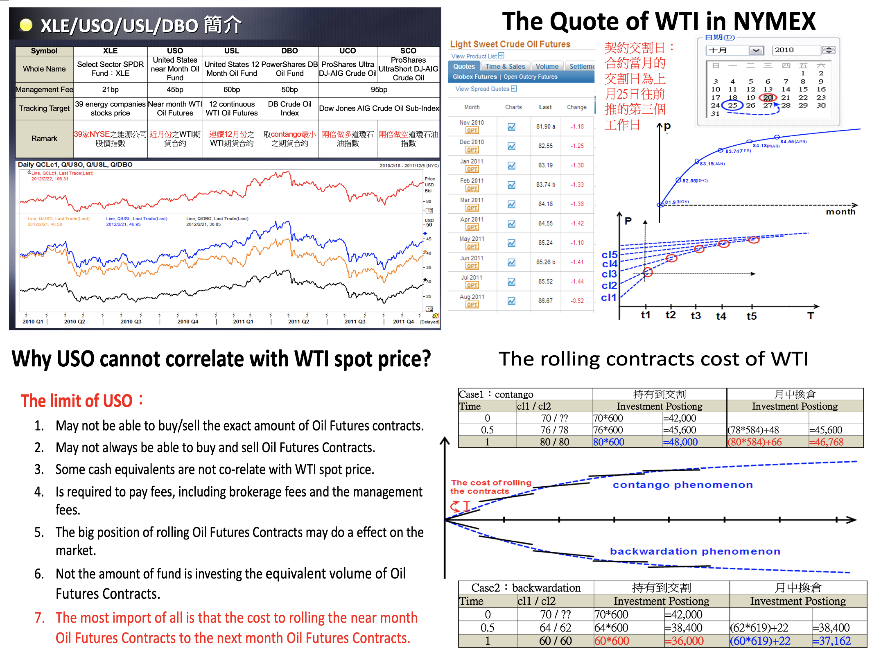
選擇權簡介:
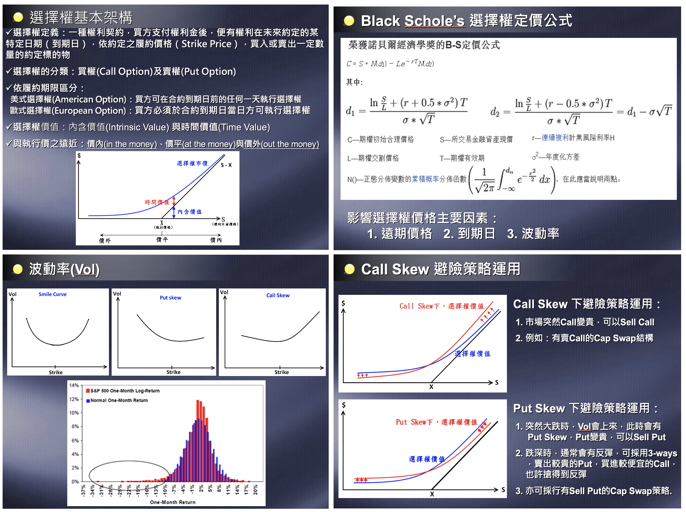 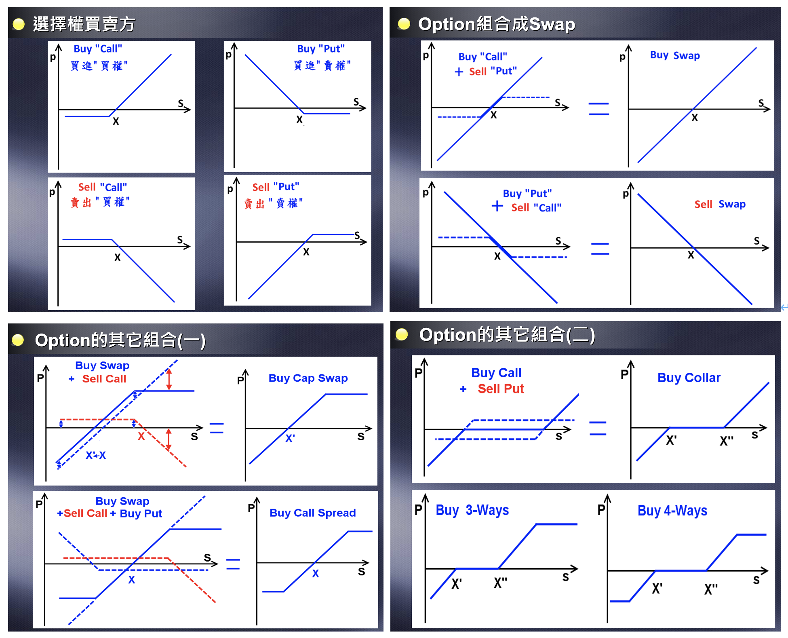
Delta Hedge簡介:
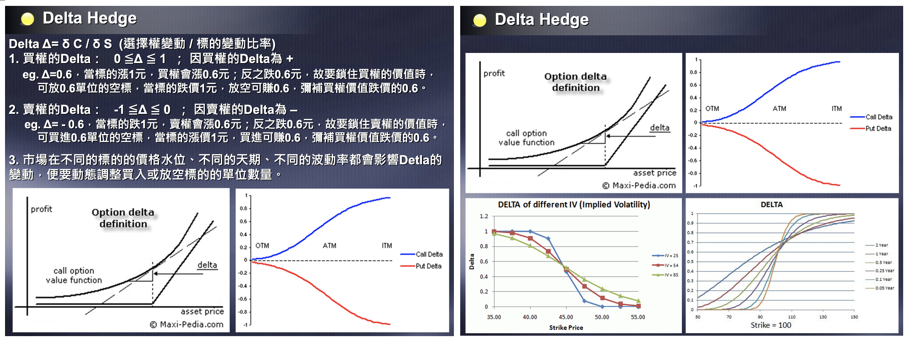
裂解價差交易:
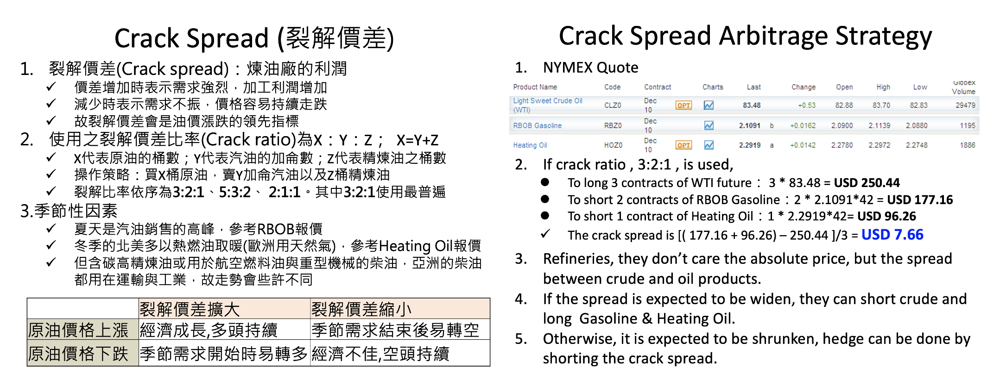
聖嬰現象、反聖嬰現象 及南方振盪指數
南方振盪指數(Southern Oscillation Index，SOI):
選定大溪地（在太平洋）與澳洲達爾文（太平洋與印度洋交界處附近）兩地作為東、西太平洋的代表地之氣壓差距，具體計算方法有多種。
澳洲氣象局採用的是Troup SOI，該計算方式下，當該指數持續低於-7時，通常表示出現了聖嬰現象；持續高於+7則表明出現了反聖嬰現象。
聖嬰(El Niño):
赤道東太平洋地區的冷水上翻減少或停止，海水溫度就升高，形成大範圍的海水溫度異常增暖。突然增強的這股暖流沿著厄瓜多海岸南侵，使海水溫度劇升，冷水魚群因而大量死亡，海鳥因找不到食物而紛紛離去，漁場頓時失去生機，使沿岸國家遭到巨大損失。
在聖嬰現象發生當年，容易在西北太平洋和東北太平洋形成威力強大的颱風和颶風。
反聖嬰(La Niña):
與聖嬰現象的太平洋中東部海水溫度變暖相反，反聖嬰現象是太平洋中東部海水異常變冷的情況。反聖嬰現象會造成全球氣候的異常。 影響包含：使美國西南部和中南美西岸變得異常乾燥，並使澳洲、印尼、馬來西亞和菲律賓等東南亞地區有異常多的降雨量，以及西太平洋地區的臺灣、日本和朝鮮半島異常寒冷。
有趣的是，反聖嬰現象一旦出現，在北大西洋的颶風也會異常活躍。


同業油料避險比較：
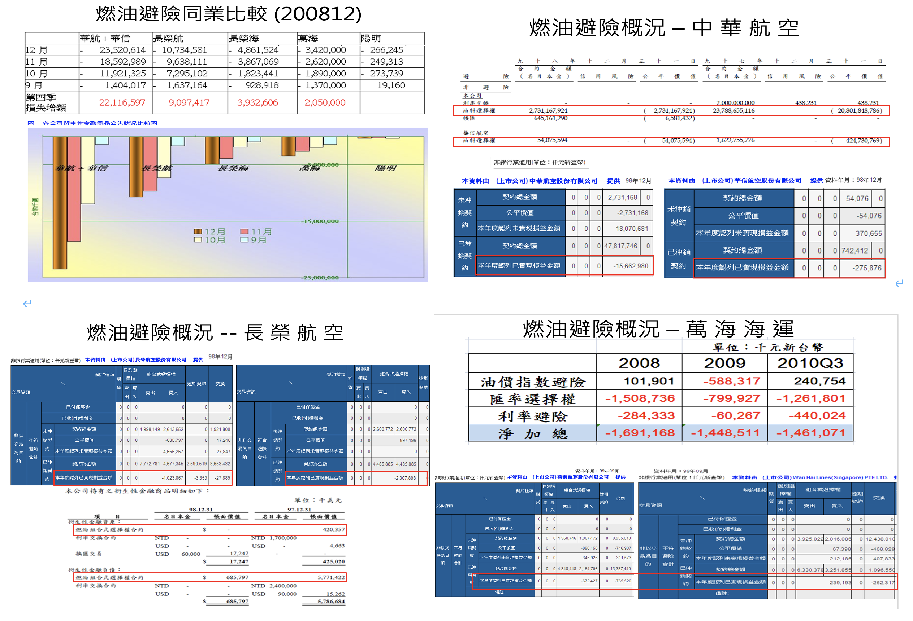
以Brent替代船用燃油避險可行性研究
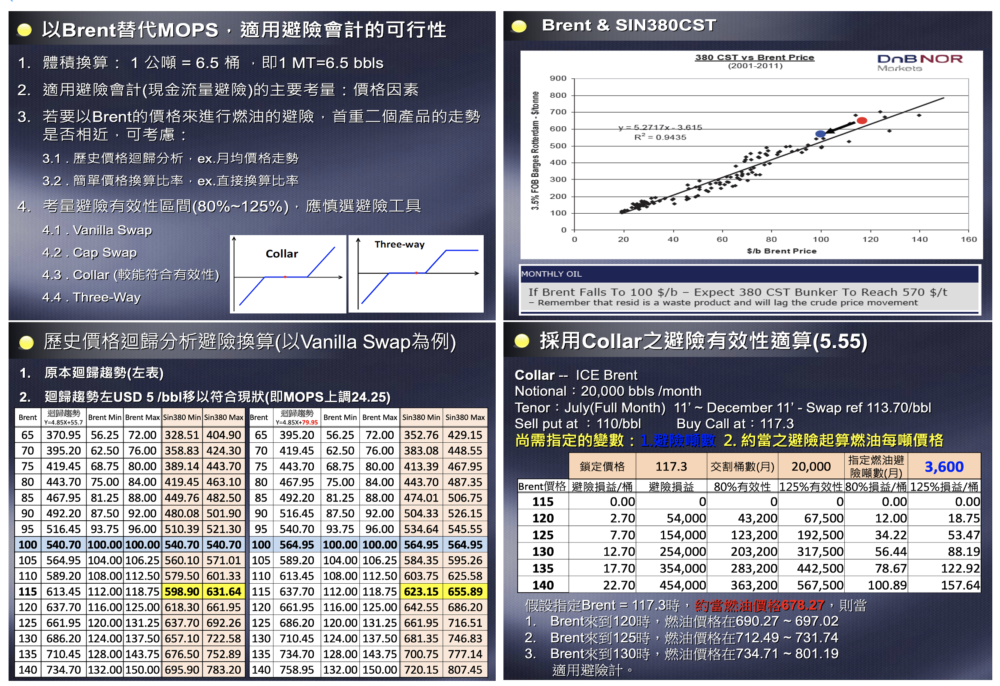
突發事件分析：e.g.,2011年伊朗對抗國際制裁揚言封鎖海峽，市場油價看法分析

2013年2月出差新加坡拜訪JP Morgan交易室之問題請益彙整
1. Traders’ views for the oil market, if traders can share the indicators they monitors.
交易員主要 watch 原油價格的變動，而至於成品油，就在於不同產品油對原油之間的裂解價差。
2. Fuel oil end users and their hedging strategies
JP的航運客戶中，目前較積極的為YM，避險時點也是各避險者選定再進場，但JP開始與實體油商接洽，以提供客戶在實體需求上的避險需求。
3. Bunker hedging participants outline：airlines & shipping
4. How can we hedge, as the market comes to a contango?
市場出現contango通常意味跌勢狀況持續，不做paper也是一種hedge
5. Once the market comes to a contango, if JP can provide any paper or physical services, such as buying fuel reserves in Singapore via JP?
JP沒有提供實體storage服務 ，若遇Contango市場，JP建議在同一個交易單裡把遠天期部位放大，藉此來壓低承做價格，但這樣一來，MTM波動則會變大。
6. The credit limit for our hedging position
JP會根據YM的部位使用量，即時調整額度，沒有額度限制的問題
7. The methods traders use to balance the position
投資銀行在接了客戶Bunker交易單後，會與手上已有的部位一起看，並同時在市場上拋補，遠天期的部位就用流動性較高的近月Brent進行拋補，即便如此，也沒辦法100%平掉部位，剩下的就藉由Gamma來每天調整整體部位的VAR.
8. How can an oil-trading company hedge their risk by papers?
可依據淨部位狀況，買賣期貨或組合式選擇權進行避險
9. When will a large arbitrage cargo from the west be triggered；if we can do ROT 3.5% paper hedge with JP?
ROT的流程性較SIN好很多，JP也能提供ROT方面的避險報價，交易員也會參考路透社的Tanker的租金來做交易的判斷之一，畢竟新加坡煉油場只能滿足30%左右的需求，大部份的油品仍然靠進口來滿足。
交易績效：
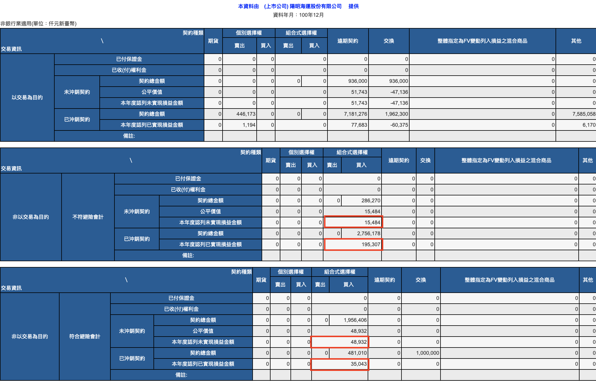 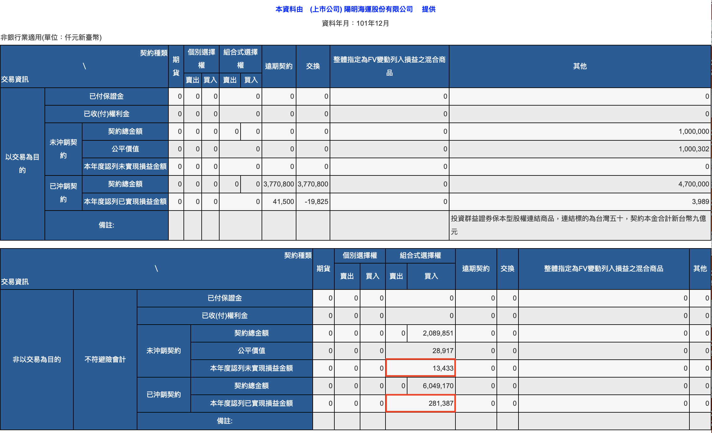 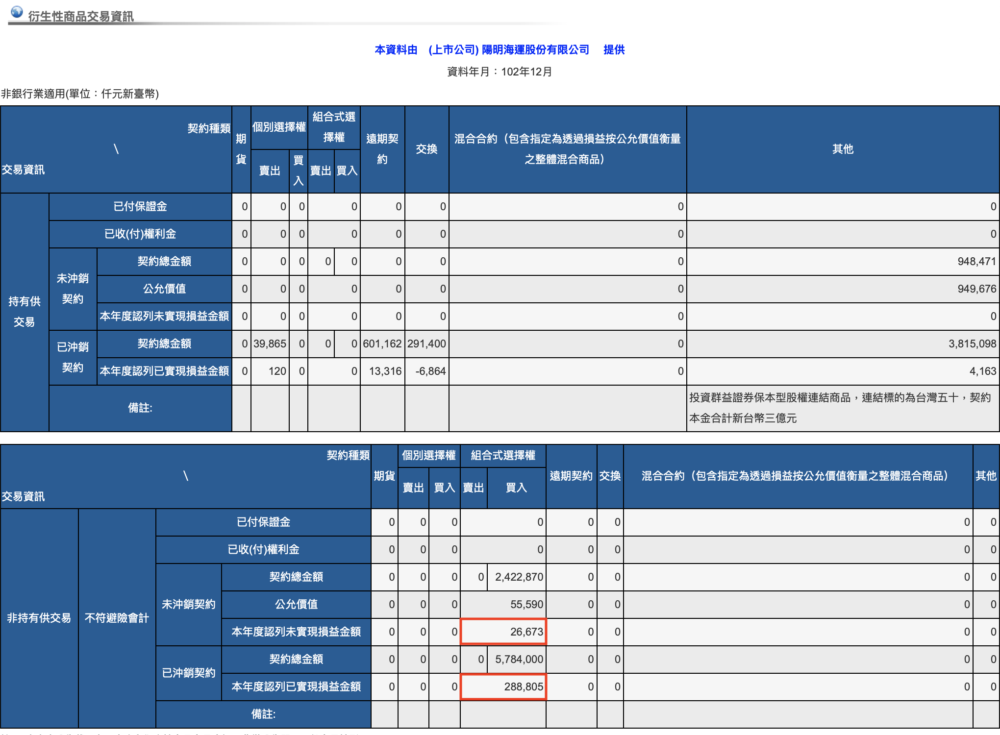